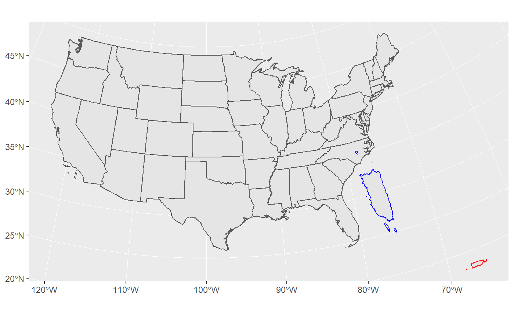

transport_sf.RdTakes an sf object and a reference sf object and transports it by scaling, shifting it and rotating it.
transport_sf(sf, ref = sf, scale = 1, shift = c(0, 0), rotate = 0)
| sf | The sf object to transport |
|---|---|
| ref | The reference sf object |
| scale | A scaling factor (defaults to 1, meaning no change in scale) |
| shift | Distance to shift (TKTKTK what units is it?) |
| rotate | Radians to rotate the sf object |
An sf object
# Transports Puerto Rico off the coast of Georgia, rotate 90 degrees # made 4 times bigger (original Puerto Rico in red, moved in blue) library(ggplot2)#> #>ggplot()+ geom_sf(data=ggcart:::lower48)+ geom_sf(data=ggcart:::puerto_rico) + geom_sf(data=ggcart:::puerto_rico, color = "red")+ geom_sf(data=transport_sf(sf=ggcart:::puerto_rico, scale=4, shift = c(-130,90)*10000, rotate=pi/2), color="blue")#> Error in grid.Call(C_textBounds, as.graphicsAnnot(x$label), x$x, x$y, resolveHJust(x$just, x$hjust), resolveVJust(x$just, x$vjust), x$rot, 0): polygon edge not found